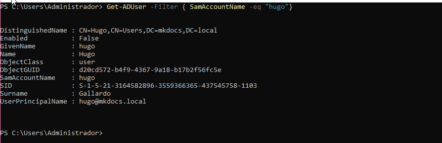

Sprint 3 Windows
Instalacion dominio Active Directory
Utilizaremos “xarxa NAT” para que nuestra IP sea fijo independientemente de mi ubicacion.
La colocamos estática para corroborar que no cambiara.
Le hacemos un ping a 8.8.8.8 para comprobar que tenemos acceso a internet.
Cambiamos el HOSTNAME del equipo para que sea mas accesible, ya que el Default esta definido por Numeros y Letras
Una vez hemos hecho todos los preparativos abrimos el Administrador del servidor.
Entramos al apartado de "Agregar roles y caracteristicas" y le daremos a siguiente hasta el apartado de Roles de servidor
Agregaremos el rol en el servidor de "Servicios de dominio de Active Directory"
Seguiremos dandole a siguiente hasta la confirmacion final que le daremos a Instalar.
Ahora le daremos a "Promover este servidor a controlador de dominio"
Esto hara que se nos abra un apartado para iniciar la configuracion del Dominio. Iniciaremos colocandole el nombre al dominio y seleccionando la casilla de "Agregar un nuevo bosque"
Continuaremos configurando el dominio en base lo que buscamos.
Le daremos a Siguiente hasta llegar al apartado de instalacion dejando los valores por defecto en el resto de apartados. Una vez acabe la insalacion el sistema se reiniciara por defecto.
Si se a instalado correctamente ahora tendria que salir el nombre del dominio antes del ususario.
Gestion del dominio
En Windows Server se usan las herramientas:
-
ldifde.exe → Para importar, exportar, modificar o eliminar objetos AD/LDAP usando .ldf.
-
dsadd, dsmod, dsrm, dsquery → Comandos rápidos para tareas en AD.
-
Active Directory Users and Computers (GUI) → Para tareas visuales.
Esto crea un archivo export.ldf con todos los objetos del dominio actual (similar a slapcat).
Crearemos un archivo .ldf donde crearemos usuarios y grupos El archivo quedaria de estamanera con esta estructura
y ahora ejecutaremos el siguiente archivo
Ejecutaremos la siguiente comanda ldifde -i -f usuarios.ldf -s localhost -b administrador "" "05092005hH" para ejecutar el documento y que se cree el usuario
Ahora abriremos el powershell para comprobar que existe el ususario

Para poder iniciar con el tendremos que colocarle una contraseña por lo que colocaremos el siguiente comando en el powershell y le asignaremos una.
Para los siguientes pasos tendremos que Importar el modulo de Active Directory en el Power Shell sino habra comandos que no nos dejara utilizar.
Ahora crearemos despues de haber importado el modulo de active directory una organizacion que se llamara usuarios
Ahora crearemos un grupo dentro de esa organizacion llamada Default
Crearemos un usuario dentro de la OU usuarios
Añadiremos el usuario al grupo Default
Ahora modificaremos la informacion / atributos de uno de los usuarios
Ahora eliminaremos un usuario
Entornos Graficos
Como entorno grafico utilizaremos la propia herramienta de Active Directory
Nos situaremos en la OU donde queremos hacer el usuario en nuestro caso en "Usuarios", iremos a la parte de arriba y le daremos a crear nuevo usuario
Se nos abrira una pestaña donde podemos empezar a crear el usuario con lo que nos pide
Le colocaremos una contraseña
Ahora tendremos al usuario nuevo creado de manera grafica
Ahora para crear un nuevo grupo iremos al mismo sitio donde hemos creado el usuario pero una opcion mas a la derecha.
Nuevamente se nos abrira una pestaña y podremos comenzar a crear el grupo
Completaremos el formulario con los datos y ya lo tendriamos creado.
Para añadir el usuario al nuevo grupo le daremos click derecho -> propiedades en el grupo Prueba y entraremos al apartado de miembros
Le daremos a Agregar y añadiremos al usuario JGallardo
Ahora eliminaremos el usuario dando click derecho sobre el y le daremos a Eliminar
Unir equipos al dominio
Activaremos una maquina de Windows normal y la pondremos en el mismo rango IP que el servidor
Tendremos que colocarle una IP estatica con las especificaciones del servidor.
para unirlo al dominio tendremos que ir al mismo apartado que para cambiarle el nombre al equipo, seleccionar en la parte de abajo dominio y colocar el dominio que hemos creado en el otro pc en mi caso "mkdocs.local"

Colocamos las credenciales con la que nos queremos conectas
Servidor SAMBA
El apartado de SAMBA es mucho mas complejo en Windows ya que un windows server ya actua propiamente como servidor "SAMBA"
Crear una carpeta compartida
Crearemos una carpeta nueva la cual compartiremos.

Le daremos click derecho sobre la carpeta e iremos al apartado de compartir
Volveremos a darle al apartado de compartir, abriremos el desplegable y colocaremos el nombre de uno de los perfiles del Active Directory.
En el apartado de Seguridad podriamos indicar la seguridad de los Grupos y los usuarios.
Le daremos a compartir y ahora probaremos a acceder desde el usuario en la maquina cliente.
Ahora abrimos el explorador de carpetas y buscamos la ruta de la carpeta compartida.
Y comprobamos que los permisos se han compartido adecuadamente.
Servidor NFS
Abriremos Server Manager para instalar un servidor NFS e iremos a "Agregar roles y caracteristicas"
Iremos hasta el apartado de "Agregar Roles" e iremos al desplegable de "Servicios de archivos y almacenamiento" y activaremos "Servicios de archivos y iSCSI"
Expandiremos nuevamente el desplegable y marcaremos "Servidor NFS" una vez marcado avanzaremos hasta instalar y lo instalaremos
Para compartir una carpeta por NFS tendremos que crear primero la carpeta.
Ahora iremos a propiedades y al apartado de "Uso compartido de NFS"
Marcaremos la casilla de compartir carpeta para poder modificar los apartados de la carpeta compartida por NFS
Le daremos al apartado de permisos y ahi podremos agregar a ususarios o IP's para que lo veo un equipo entero.
Agregare al usuario Hugo con permisos de Lectura y Escritura.

CLIENTE
Para poder acceder a la carpeta desde el Cliente NFS tendremos que activar la caracteristica en el cliente, asi que accederemos al Panel de control > Programas > Activoar o desactivar las caracteristicas de Windows.
Activaremos los Servicios de NFS en el cliente.
Ahora colocaremos la siguiente comanda en el CMD para poder pontar la unidad compartida con NFS en la unidad Z:
Ahora podremos comprobar con el comando mount que se a creado correctamente.
Ahora si nos vamos al explorador de archivo podremos ver la carpeta compartida en la Unidad Z: en el apartado "Ubicaciones de red"
Como podemos ver la carpeta esta vacia asi que crearemos un archivo par acomprobar que se ve en el servidor.
Perfil Movil
Crearemos una carpeta donde ubicaremos los perfiles moviles
Ahora compartiremos la carpeta con el dominio al que perteneceran los perfiles moviles. IMPORTANTE! Le colocaremos un $ al final del nombre del recurso compartido para que sea visible en la red
Le colocaremos los permisos a todos los usuarios del dominio
Ahora buscaremos el usuario que queremos hacer perfil movil, en mi caso sera Hugo. Entraremos dentro de Usuarios y equipos de Active Directory, seleccionaremos el perfil Hugo y cambiaremos el apartado de Ruta de Perfil y le colocamos la ruta de la carpeta.
Ya tendriamos el perfil movil creado.